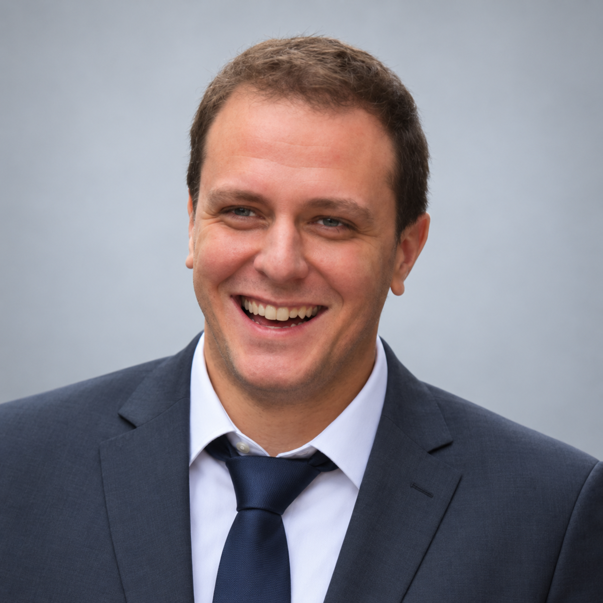

Control & optimization
Predictive control, quadratic programming and constrained motion. From dynamic models to C++ implementations.
MPC · QP · qpOASES · PID · LQR
Robotics R&D Engineer
I design and implement control and navigation algorithms, then validate them through simulation and experiments. My background combines industrial drone autonomy at UAVIA with research in physical human–robot assistance at Inria.

Three complementary areas, developed through research and industrial engineering.
Predictive control, quadratic programming and constrained motion. From dynamic models to C++ implementations.
Motion planning, guidance, precision landing and sensor-based state estimation.
System identification, human–robot interaction and validation using measured motion and forces.
A continuous thread: understanding the dynamics, implementing algorithms and testing their behavior.
Development of drone navigation functions in C++: constrained control, planning, landing and safety.
Modeling and control for physical human–robot assistance in an industrial manual task.
Doctoral research not yet defended; defense envisaged in early 2027.
Microrobotic comanipulation control and experimental platform development.
Prototyping a rapid drone battery charging system.
Explore the problem, my contribution, the technical approach and the validation process.
From motion planning to constrained control, precision landing and safety behaviors.
Explore project↗Modeling, simulation and constrained assistance control for an industrial manual task.
Explore project↗A multidimensional view of task performance, safety-related actions and physical demands.
Explore project↗Nassim Benhabib, Vincent Padois, David Daney · First author
Publication record ↗ · Award record ↗Benjamin Camblor, Nassim Benhabib, David Daney, Vincent Padois, Jean-Marc Salotti · Coauthor
Publication record ↗R&D in control, autonomous navigation and physical human–robot interaction.